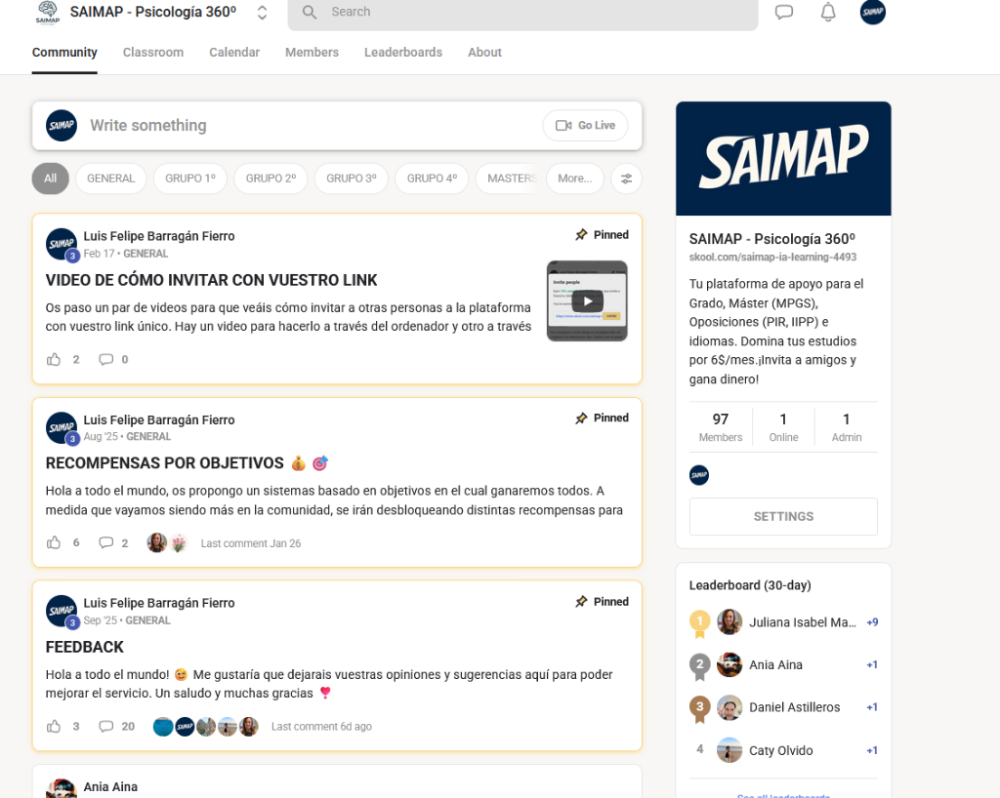
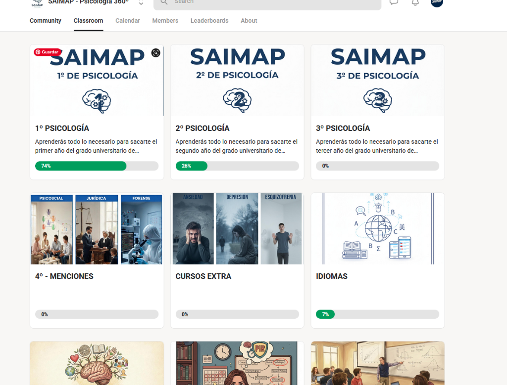
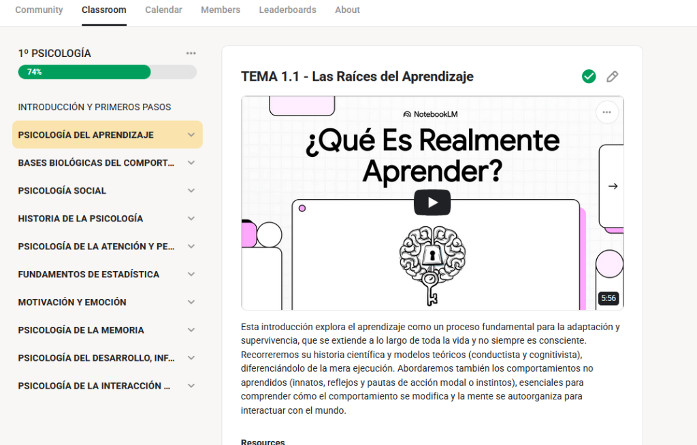
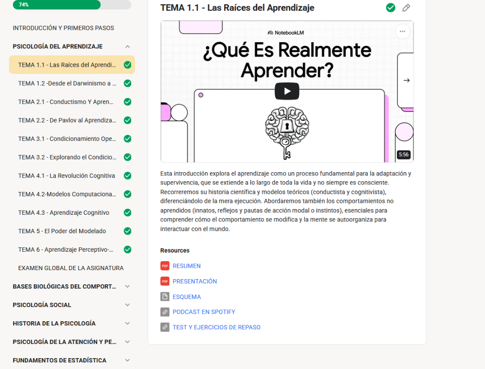
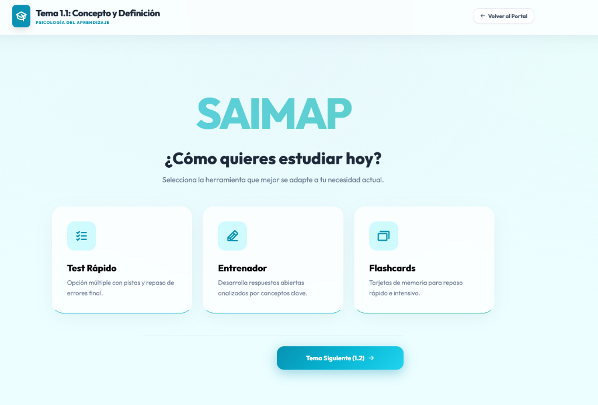
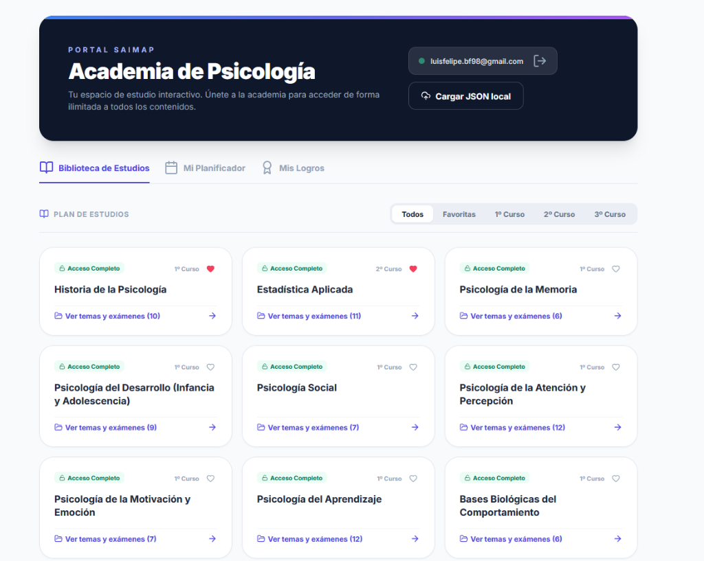
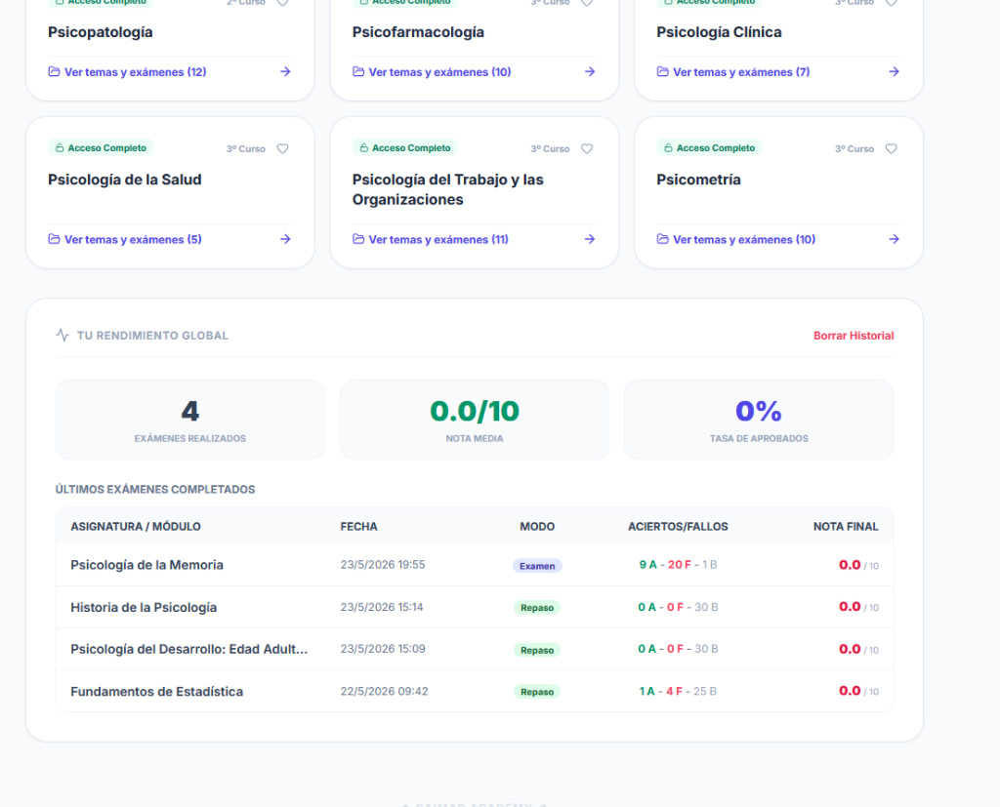
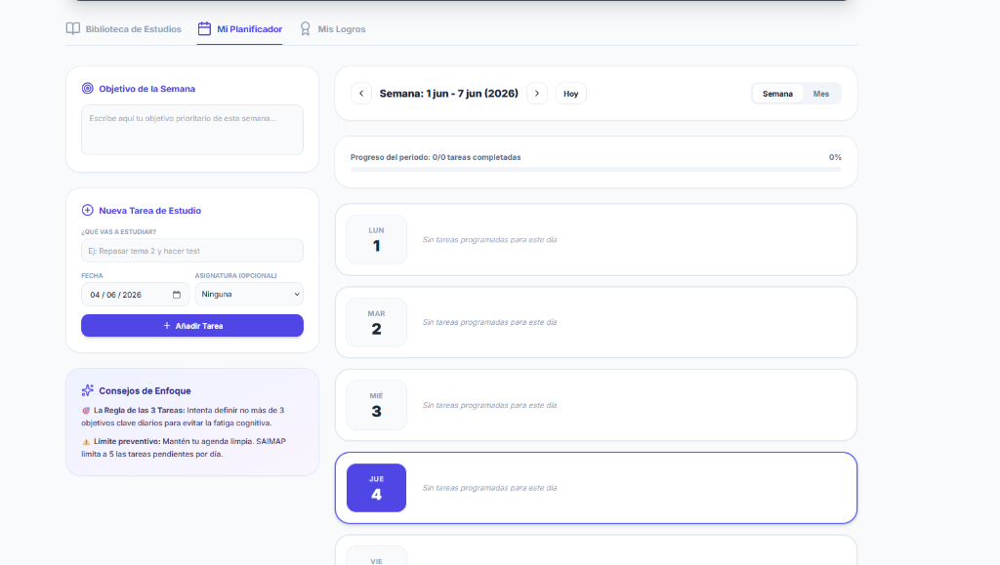
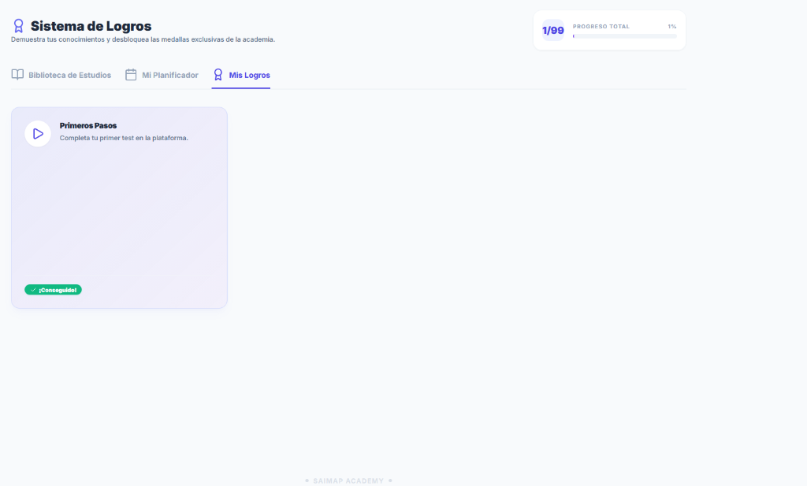
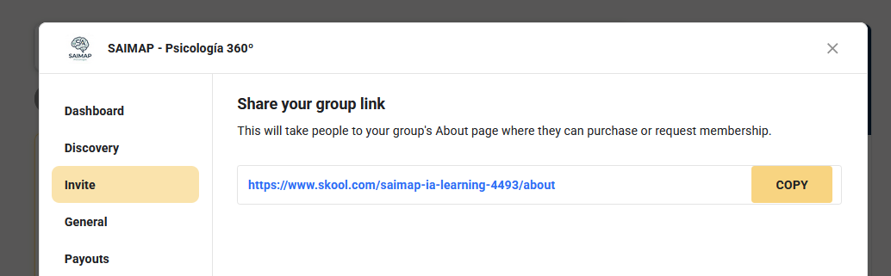

Guía de Inducción Ampliada: PRIMEROS PASOS en SAIMAP
📖 Lección 1: Bienvenido a SAIMAP 360º y la Comunidad
¡Hola y bienvenido a SAIMAP - Psicología 360º! 🚀
Esta es tu plataforma de apoyo definitiva para superar el Grado, preparar tu Máster (MPGS), Oposiciones (PIR, IIPP) o dominar los idiomas aplicados. Queremos que tu experiencia de estudio sea lo más fluida, dinámica y eficaz posible.
Para empezar, hablemos de nuestro punto de encuentro: la Comunidad.
🤝 ¿Qué encontrarás en la pestaña Comunidad?
La pestaña Comunidad es el corazón social de la academia. Aquí es donde interactuamos todos los días:
- Publicar dudas e ideas: Puedes usar la caja de "Write something" para iniciar una conversación, preguntar sobre algún tema de estudio o compartir recursos útiles.
- Anuncios importantes: Estate atento a los posts fijados (Pinned). Aquí publicamos novedades clave, vídeos explicativos (como "Cómo invitar con vuestro link") o dinámicas de recompensas.
- Secciones por grupos: Filtra los posts según tu curso o interés (GENERAL, GRUPO 1º, GRUPO 2º, MASTER, etc.) para encontrar rápidamente lo que necesitas.
- Tabla de clasificación (Leaderboard): A la derecha verás el ranking de miembros activos. ¡Aportar valor en la comunidad te ayuda a subir de nivel y desbloquear recompensas!

🎓 Lección 2: Explora el Classroom (Tus Cursos)
El Classroom es tu biblioteca digital de aprendizaje. Aquí es donde se almacena todo el contenido estructurado de la carrera.
🗂️ ¿Cómo se organiza el contenido?
Al entrar en la pestaña Classroom, verás diferentes carpetas o cursos principales:
- Cursos Académicos: Desde 1º de Psicología hasta 4º - Menciones, organizados año por año para que no te pierdas.
- Cursos Extra y Especializaciones: Formaciones adicionales diseñadas para complementar tu carrera (ej. Cursos sobre Ansiedad, Depresión, Esquizofrenia).
- Idiomas: Recursos de apoyo lingüístico esenciales para la psicología moderna.
Cada curso te muestra una barra de progreso (74%, 26%, etc.) para que lleves un control visual y motivador de cuánto has avanzado en cada etapa de tu formación.

📺 Lección 3: Dentro de un Curso y Navegación de Temas
Una vez que haces clic en uno de tus cursos (por ejemplo, 1º de Psicología), accederás a la zona de estudio estructurado.
🧭 Estructura de Navegación Lateral (Izquierda):
En la barra lateral izquierda tendrás la lista completa de asignaturas del curso (ej. Psicología del Aprendizaje, Bases Biológicas, Psicología Social, etc.).
- Al hacer clic en una asignatura, se desplegarán todos los Temas ordenados cronológicamente (Tema 1.1, Tema 1.2, etc.).
- Al final de cada lista de temas, encontrarás el acceso al EXAMEN GLOBAL DE LA ASIGNATURA.
- Verás un check verde (✔️) al lado de los temas que ya has completado.
📺 El Área de Contenido Principal (Derecha):
Al seleccionar un tema, a la derecha aparecerá la información interactiva. Lo primero que verás es un Vídeo Explicativo integrado (generalmente un vídeo conciso de unos 5-10 minutos) que te da la introducción conceptual directa del tema para que empieces con una base sólida.

📦 Lección 4: Recursos de Estudio: Resúmenes, Esquemas y Podcast
Debajo de la descripción de cada tema encontrarás la sección de Resources (Recursos). Estas son las herramientas diseñadas para optimizar tu estudio conceptual:
📥 Tus Herramientas Conceptuales:
- 📄 RESUMEN: Un documento en PDF condensado y directo al grano con los conceptos teóricos esenciales del tema.
- 📊 PRESENTACIÓN: Las diapositivas visuales tipo PowerPoint en PDF para repasar de forma ágil y gráfica.
- 📐 ESQUEMA: Un mapa mental o esquema que conecta de forma lógica y visual los conceptos más importantes.
- 🎙️ PODCAST EN SPOTIFY: Un audio explicativo en Spotify para que puedas repasar los conceptos en cualquier lugar (caminando, en el transporte, entrenando).

✍️ Lección 5: La Zona de Repaso (Tus 3 Modos de Estudio)
Cuando haces clic en el enlace "TEST Y EJERCICIOS DE REPASO" de cualquier tema, entrarás a la plataforma interactiva de SAIMAP. Esta interfaz te permite elegir cómo quieres estudiar hoy:
🛠️ Los 3 Modos de Estudio Interactivos:
- 📝 Test Rápido:
- Preguntas de opción múltiple con opción de ver pistas (Ver Pista) para ayudarte a resolverlas.
- Al final del test, tendrás un repaso detallado de todos tus errores con explicaciones analíticas completas.
- ✍️ Entrenador:
- Un método avanzado para desarrollar respuestas abiertas. Escribes tus respuestas y la plataforma las analiza en base a conceptos clave del tema.
- 🗂️ Flashcards:
- Tarjetas de memoria digitales ideales para el repaso rápido, la memorización activa y el estudio intensivo de términos clave antes del examen.

📊 Lección 6: El Portal: Biblioteca y Control de tu Rendimiento
El Portal de SAIMAP te ofrece un centro de control global de todo tu progreso académico a través de la sección Biblioteca de Estudios.
📚 Plan de Estudios:
Aquí tienes tarjetas para cada una de las asignaturas ordenadas por cursos (1º Curso, 2º Curso, 3º Curso).
- Cada asignatura te muestra tu estado de acceso (Acceso Completo) y te permite ver rápidamente todos sus temas y exámenes.
- Puedes marcar asignaturas como Favoritas (con el corazón ❤️) para tenerlas siempre a mano en la pestaña correspondiente.
📈 Tu Rendimiento Global (Stats de Exámenes):
Si haces scroll hacia abajo en la biblioteca, verás tu panel de control de rendimiento:
- Exámenes Realizados: Cantidad acumulada de simulacros y test completados.
- Nota Media: Tu puntuación promedio sobre 10.
- Tasa de Aprobados: Porcentaje global de acierto.
- Historial de Últimos Exámenes: Una tabla detallada con el nombre de la asignatura, la fecha y hora exactas, el modo (Examen o Repaso), el desglose de aciertos/fallos/blancos y tu nota final. ¡Ideal para ver tu evolución a lo largo del tiempo!


📅 Lección 7: Planifica tu Semana (Mi Planificador)
Una de las herramientas más potentes del Portal de SAIMAP es Mi Planificador, tu organizador de tareas y objetivos diseñado específicamente para estudiantes de psicología.
🎯 Objetivo de la Semana:
En la esquina superior izquierda puedes redactar tu meta prioritaria de la semana (ej. "Estudiar el Tema 3 de Fisiológica y hacer 5 test"). Escribirlo te ayuda a mantener el foco mental.
📝 Nueva Tarea de Estudio:
Puedes agendar nuevas tareas indicando:
- ¿Qué vas a estudiar? (ej. "Repasar tema 2 y hacer test")
- Fecha planificada.
- Asignatura asociada (opcional).
- Al pulsar "Añadir Tarea", se colocará automáticamente en tu calendario semanal interactivo a la derecha.
💡 Consejos de Enfoque Científico integrados:
- La Regla de las 3 Tareas: Intenta definir no más de 3 objetivos clave diarios para evitar la fatiga cognitiva.
- Límite Preventivo: Para que tu agenda sea realista, SAIMAP limita tu planificación a un máximo de 5 tareas pendientes por día. ¡Calidad antes que cantidad!

🏆 Lección 8: Gamificación y el Sistema de Logros
En SAIMAP premiamos tu esfuerzo y tu constancia. Para ello, hemos desarrollado la pestaña Mis Logros.
🥇 Colecciona Medallas Exclusivas:
- A medida que estudias, realizas test y completas hitos en la plataforma, desbloquearás insignias y medallas.
- Por ejemplo, tu primera medalla será "Primeros Pasos" (que se consigue al completar tu primer test en la plataforma).
- Podrás ver tu medalla iluminada y con el sello verde de ¡Conseguido! en tu colección.
- En la esquina superior derecha verás tu barra de progreso de logros global (ej. 1/99 medallas desbloqueadas). ¡Intenta conseguirlas todas para demostrar tu dominio de la psicología!

🔗 Lección 9: Invita a Amigos y Gana Recompensas (Tu Link Único)
¿Sabías que puedes estudiar gratis o incluso ganar dinero recomendando SAIMAP? 💸
En la columna lateral derecha de la Comunidad, verás tu enlace de invitación único personalizado (ej. skool.com/saimap-ia-learning-4493...).
👥 ¿Cómo funciona el sistema de afiliados?
- Comparte tu enlace: Copia tu link único y pásaselo a tus compañeros de clase, amigos de carrera o publícalo en tus redes sociales.
- Recompensas: Por cada persona que se registre en la academia a través de tu enlace, recibirás una comisión del 10% mensual recurrente de su suscripción. ¡Invita a 10 personas y tu suscripción será completamente gratuita!
- Crecimiento de la Comunidad: A medida que sumemos más miembros activos, se irán desbloqueando dinámicas de objetivos grupales y recompensas especiales para todos.
